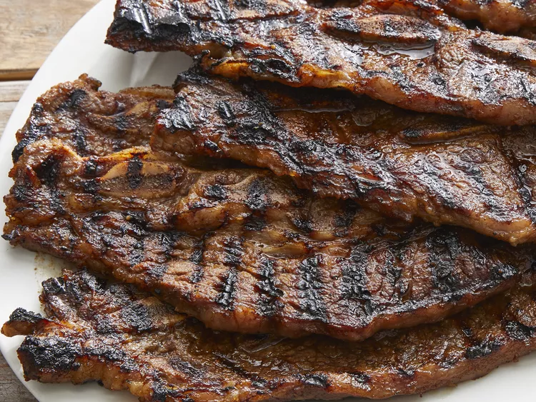

Korean BBQ Galbi

Ingredients
- 5 pounds beef short ribs, cut flanken style
- 1 Asian pear, cored and cubed
- 1 onion, coarsely chopped
- 5 cloves garlic
- 1 cup soy sauce (such as Kikkoman®)
- 1 cup brown sugar
- ¼ cup honey
- ¼ cup sesame oil
- black pepper to taste
Directions
- Place ribs in a large pot and cover with cold water. Soak ribs in the
refrigerator for 1 hour to pull out any blood. Drain.
- Combine Asian pear, onion, and garlic in a blender; blend until smooth.
Pour into a large bowl and stir in soy sauce, brown sugar, honey,
sesame oil, and black pepper. Add ribs to soy mixture; turn to coat
evenly. Cover the bowl and marinate in the refrigerator, 8 hours to
overnight.
- Preheat an outdoor grill for high heat and lightly oil the grate.
- Remove ribs from marinade and cook on the preheated grill until meat
is tender and the outside is crusty, 5 to 10 minutes per side.
Discard marinade.
Return to main page